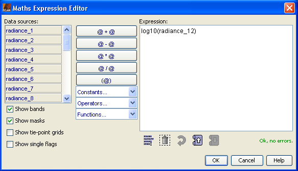

| Band Maths Expression Editor | |
VISAT's expression editor provides a convenient way to construct maths expressions with C syntax from various data sources, such as bands, tie-point grids and flag values. You can combine these data sources by a number of comparison, arithmetic, logical and binary operators or use them as arguments for mathematical functions.

Selects the current input product providing source bands, tie-point grids and flags.
This selector is only shown if there is more than one compatible product.
If there is more than one input product available the references to bands and tie-points
need to be prepended by a dollar and the reference number of the corresponding product separated by a dot.
The reference number of a product is the number in square brackets at the beginning of the product name.
An expression pointing to a band called band_1 would than e.g. be $2.band_1.
The list of available data sources provided by the selected input product. Click on a data source to move it into the expression text field.
Show bands checkbox
Checks whether or not the bands of a product are shown in the list of available data sources.
References to bands in an expression always evaluate to geo-physical, scaled (calibrated) sample values.
If you are more interested in the raw sample values rather than the geo-physical sample values,
use the syntax band.raw, where band is the name of any band.
Show masks checkbox
Checks whether or not the masks of a product are shown in the list of available data sources.
Show tie-point grids checkbox
Checks whether or not the tie-point grids of a product are shown in the list of available data sources.
Show single Flags checkbox
Checks whether or not the flags of a product are shown in the list of available data sources.
The expression text field. You can also directly edit the expression here.
| Select All Button | Selects the entire text in the expression text field. | |
| Clear Button | Clears the entire text in the expression text field. | |
| Undo Button | Undoes multiple last edits in the expression text field. | |
| History Back Button | Lets you go back through history of expressions. | |
| History Forward Button | Lets you go forward through history of expressions. |
Accepts the expression.
Important note: The operators listed here are enumerated in decreasing operator precendence
(or increasing operator priority). If not otherwise stated, binary operators always bind (and evaluate) from left
to right, so that A - B - C - D is equivalent to ((A - B) - C) - D.
This operator returns a value depending on a given boolean expression X.
A ? B : C |
if A then B, else C |
These operators are provided to be used in conjunction with a data product's quality flags. The arguments must always be boolean.
X || Y |
Logical OR |
X && Y |
Logical AND |
These operators return boolean values true or false.
You can use the conditional operator to convert the boolean return value into
a real number, for example (radiance_13 <= 0) ? 0 : 10*sqrt(radiance_13)
X == Y |
Equal to |
X != Y |
Not equal to |
X < Y |
Less than |
X <= Y |
Less than or equal to |
X > Y |
Greater then |
X >= Y |
Greater then or equal to |
X | Y |
Bitwise OR |
X ^ Y |
Bitwise XOR |
X & Y |
Bitwise AND |
X + Y |
Plus |
X - Y |
Minus |
X * Y |
Divison |
X / Y |
Multiplication |
X % Y |
Modulo (remainder) |
+ X |
Arithmetic positive sign, no actual operation, equivalent to 1 * X |
- X |
Arithmetic negation, equivalent to -1 * X |
! X not X |
Logical NOT of boolean argument X |
~ X |
Bitwise NOT of integer argument X |
PI |
PI = 3.14159265358979323846. The double value that is closer than any other to PI |
E |
E = 2.7182818284590452354. The double value that is closer than any other to E, the base of the natural logarithms |
NaN |
NaN = 0.0 / 0.0. A constant holding a Not-a-Number (NaN) value |
X |
The X-position of the current pixel. |
Y |
The Y-position of the current pixel. |
sqrt( X ) |
Returns square root of X |
pow( X , Y ) |
X raised to the power of Y |
exp( X ) |
Returns euler's number e raised to the power of X |
exp10( X ) |
Returns the value of 10 raised to the power of X |
log( X ) |
Returns the natural logarithm (base e) of X |
log10( X ) |
Returns the common logarithm, the logarithm with base 10 of X. |
sin( X ) |
Returns the trigonometric sine of an angle X in radians |
cos( X ) |
Returns the trigonometric cosine of an angle X in radians |
tan( X ) |
Returns the trigonometric tangent of an angle X in radians |
asin( X ) |
Returns the trigonometric arc-sine of X |
acos( X ) |
Returns the trigonometric arc-cosine of X |
atan( X ) |
Returns the trigonometric arc-tangent of X |
atan2( Y , X ) |
Returns the angle of polar co-ordinate of X,Y |
ampl( R , I ) |
Returns the amplitude function of a complex argument, same as sqrt(R * R + I * I) |
phase( R , I ) |
Returns the phase function of a complex argument, same as atan2(I, R) |
rad( X ) |
Converts X from decimal degree to radian |
deg( X ) |
Converts X from radian to decimal degree |
abs( X ) |
Returns the absolute value of X |
sign( X ) |
Returns the sign of A, always one of -1, 0, +1 |
min( X , Y ) |
Returns the smaller value of X and Y |
max( X , Y ) |
Returns the greater value of X and Y |
floor( X ) |
Returns the largest (closest to positive infinity) double value that is less than or equal to X and is equal to a mathematical integer |
round( X ) |
Returns the closest long to X. The result is rounded to an integer by adding 1/2, taking the floor of the result, and casting the result to type long |
ceil( X ) |
Returns the smallest (closest to negative infinity) double value that is greater than or equal to X and is equal to a mathematical integer |
rint( X ) |
Returns the double value that is closest in value to X and is equal to a mathematical integer. If two double values that are mathematical integers are equally close, the result is the integer value that is even |
feq( X , Y ) |
Performs a fuzzy equal operation for the X and Y arguments |
feq( X , Y , EPS ) |
Performs a fuzzy equal operation for the X and Y arguments by using EPS as maximum deviation |
fneq( X , Y ) |
Performs a fuzzy not equal operation for the X and Y arguments |
fneq( X , Y , EPS ) |
Performs a fuzzy not equal operation for the X and Y arguments by using EPS as maximum deviation |
nan( X ) |
Returns true if X is a Not-a-Number (NaN) value, false otherwise |
inf( X ) |
Returns true if X is infinitely large in magnitude, false otherwise |